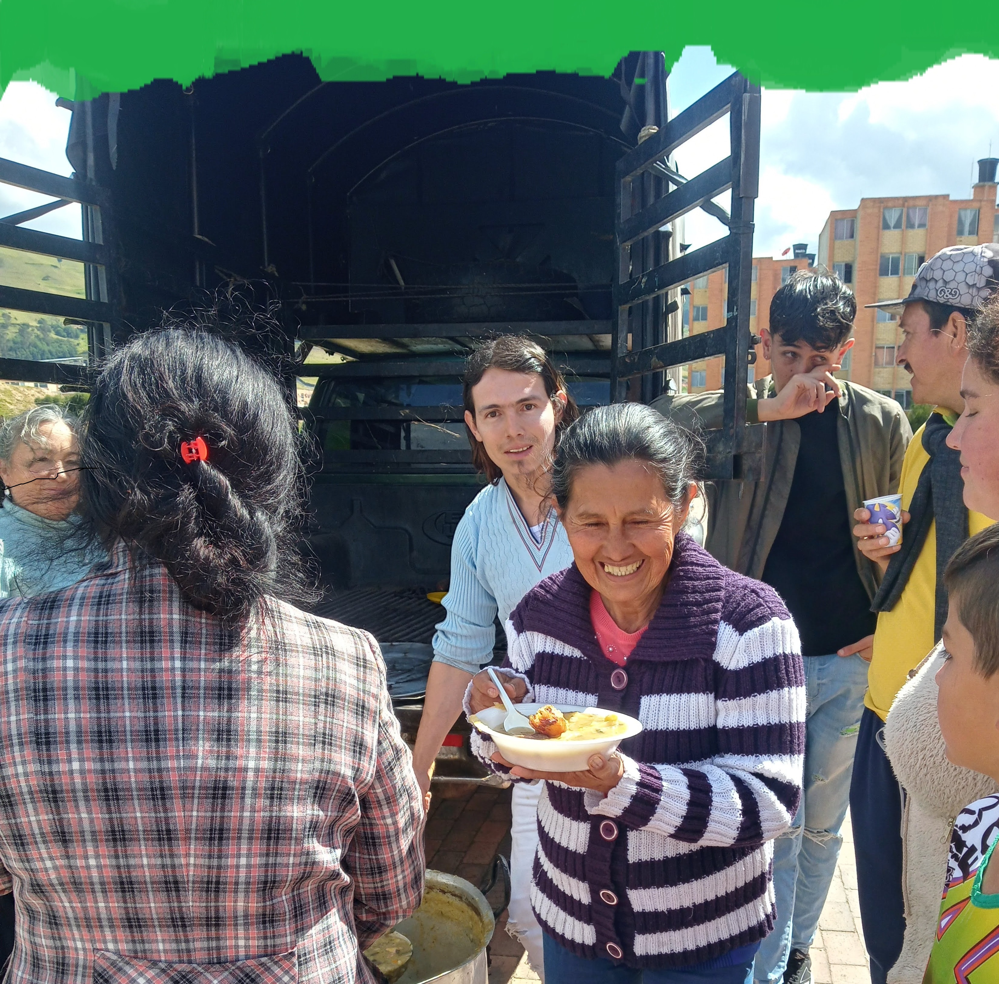

¿Estás listo para asumir este desafío con nosotros?
Tu apoyo es esencial para dar vida a todos nuestros proyectos. Únete y sé parte del cambio que queremos lograr juntos. ¡Tu contribución hace la diferencia! 💪✨
Quiero ayudar

En estos tiempos de incertidumbre y desafíos, nos encontramos reunidos como la Fundación Cristiana por una Nueva Generación para compartir un mensaje de esperanza, fe, amor y solidaridad.
Nos llena el corazón de alegría poder anunciar que estamos llevando a cabo almuerzos comunitarios para ofrecer un rayo de luz a aquellos que más lo necesitan. Sabemos que hay personas en nuestras comunidades que enfrentan dificultades y carencias, y queremos extenderles una mano amiga y un plato caliente que les brinde un poco de consuelo en su jornada.
Si bien lamentablemente no podemos hacerlo todos los días, nuestro compromiso es firme y nuestro propósito es claro: estamos trabajando arduamente para establecer un banco de alimentos que nos permita brindar ayuda de manera más constante y sostenible. Queremos ser esa fuente de apoyo constante en tiempos de necesidad, ese faro de esperanza en medio de la oscuridad.
Pero para lograr este objetivo, necesitamos de su ayuda, de su generosidad y solidaridad. Cada gesto, cada donación, cada muestra de apoyo nos acerca un paso más a nuestro sueño de construir un mundo donde nadie tenga que pasar hambre.
Por eso, los invitamos a unirse a nosotros en este noble esfuerzo. Juntos, podemos marcar la diferencia en la vida de aquellos que enfrentan adversidades. Juntos, podemos construir un futuro más brillante y esperanzador para nuestras comunidades.
¡Ayúdanos a alimentar el cuerpo y el alma de quienes más lo necesitan! Tu contribución puede hacer la diferencia entre la desesperación y la esperanza, entre la tristeza y la alegría.
Gracias por ser parte de esta hermosa misión de amor y solidaridad. Que la luz de la fe y el amor guíe cada uno de nuestros pasos en este camino de servicio y compasión.
Tu apoyo es esencial para dar vida a todos nuestros proyectos. Únete y sé parte del cambio que queremos lograr juntos. ¡Tu contribución hace la diferencia! 💪✨
Quiero ayudar